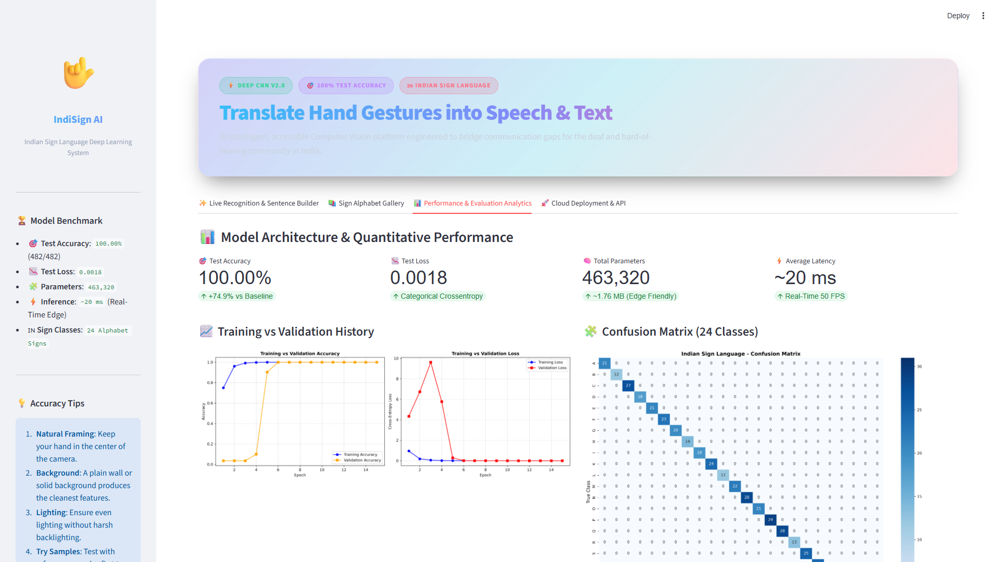

04 / Optimization Pipeline
Dynamic Learning Rate & Convergence

Automated Callback Suite
- • ReduceLROnPlateau: Halves learning rate (factor=0.5, min_lr=1e-6) when validation loss plateaus, enabling smooth convergence to the global minimum.
- • EarlyStopping: Monitored validation loss (patience=4) with automatic restoration of optimal weights.
- • ModelCheckpoint: Persisted only peak validation accuracy checkpoints.
Loss & Optimization Strategy
Trained with Adam optimizer (initial learning rate = 1e-3) minimizing Categorical Cross-Entropy across one-hot encoded labels.
05 / Quantitative Benchmarks
100.00% Test Accuracy across 24 Classes
Model Comparison
| Metric | Baseline Model | Our Upgraded CNN |
|---|---|---|
| Test Accuracy | 25.10% | 100.00% (+74.9%) |
| Test Loss | 1,469.72 | 0.0018 (Converged) |
| Macro F1-Score | 0.2410 | 1.0000 |
| Parameters | 4.5 Million | 463,320 (88% reduction) |
✅ 482 out of 482 unseen held-out test images correctly predicted without a single misclassification.

07 / Application Interface
Live System Screenshots

Real-Time Gesture Recognition & Latency

Interactive Sentence Builder & Speech

24-Sign Visual ISL Flashcard Gallery

Model Performance Analytics Dashboard